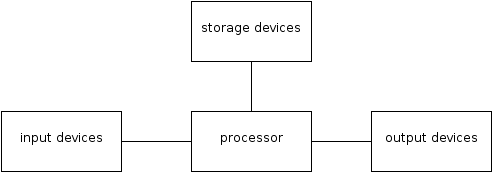
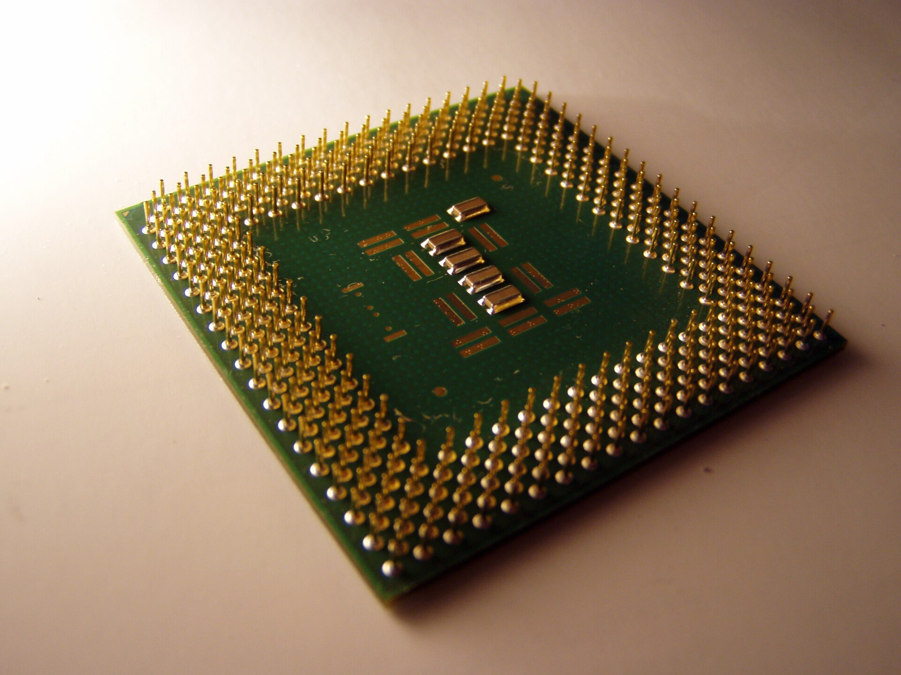
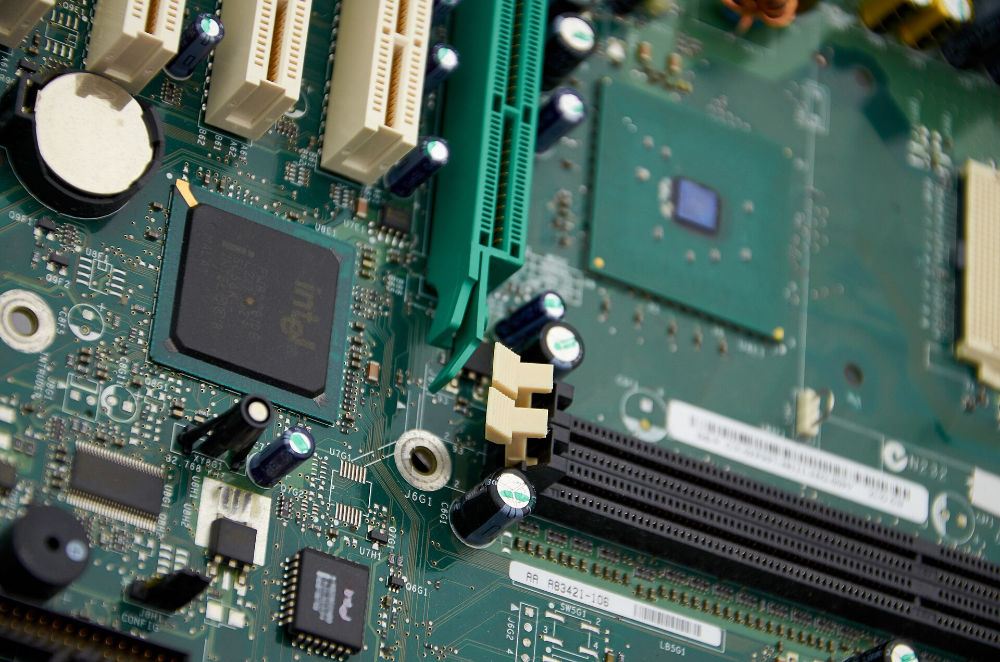
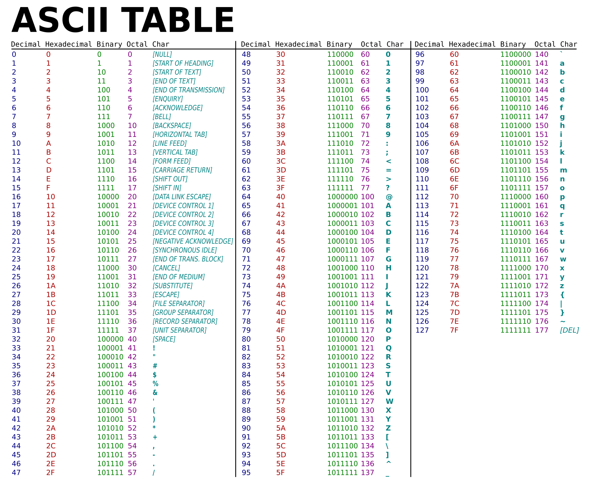
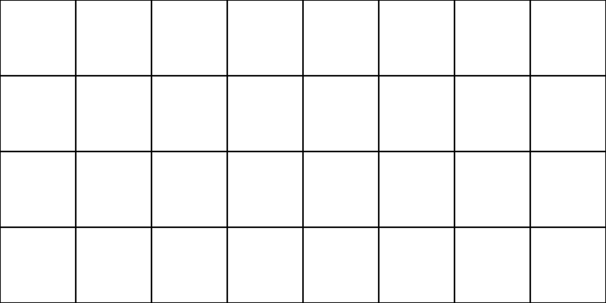

CFGS Administración de Sistemas Informáticos y en Red (1º curso)
Material elaborado para el módulo Fundamentos de Hardware
Esquema funcional y estructura de un ordenador
Programación de Aula
Resultados de Aprendizaje
Esta unidad trabaja el Resultado de Aprendizaje 1 (RA1) del módulo, según el Real Decreto 1629/2009 (Anexo I, módulo Fundamentos de Hardware):
- RA1. Configura equipos microinformáticos, componentes y periféricos, analizando sus características y relación con el conjunto.
Según la programación de aula, esta unidad (UT1) se evalúa sobre los criterios CE11, CE12, CE18, CE47 y CE49, cuya redacción literal es:
- CE11 (RA1.a): Se han identificado y caracterizado los dispositivos que constituyen los bloques funcionales de un equipo microinformático.
- CE12 (RA1.b): Se ha descrito el papel de los elementos físicos y lógicos que intervienen en el proceso de puesta en marcha de un equipo.
- CE18 (RA1.h): Se han clasificado los dispositivos periféricos y sus mecanismos de comunicación.
- CE47 (RA5.d): Se han descrito los elementos de seguridad de las máquinas y los equipos de protección individual que se deben emplear.
- CE49 (RA5.f): Se han identificado las posibles fuentes de contaminación del entorno ambiental.
Planificación Temporal (6 sesiones / 12 horas)
| Sesión | Contenido |
|---|---|
| 1 | Información, datos y sistemas informáticos. El ordenador y sus elementos |
| 2 | Unidades funcionales. Periféricos de entrada, salida y E/S |
| 3 | La memoria principal: elementos, registros y ciclo de lectura/escritura |
| 4 | La CPU: registros, ALU y unidad de control. CISC vs RISC |
| 5 | Buses del sistema: direcciones, datos y control |
| 6 | Representación de la información (texto, imagen, audio). Repaso y ejercicios |
1. Información y sistemas informáticos
1.1 Datos e información
Todos los días recibimos información por canales muy diversos: imágenes, sonidos, textos, señales... Conviene distinguir dos conceptos que a menudo se confunden:
- Dato: hecho u objeto que no ha sido manipulado (por ejemplo, un número suelto o una palabra).
- Información: resultado de procesar esos datos, de forma que adquieren un significado y permiten tomar decisiones o comunicarse.
Los datos se pueden clasificar en:
| Tipo de dato | Descripción |
|---|---|
| Numéricos | Formados por dígitos (0-9) |
| Alfabéticos | Formados por letras (a-z) |
| Alfanuméricos | Combinan letras, números y símbolos |
1.2 El tratamiento de la información
Procesar información implica siempre tres elementos: un emisor (quien genera la información), un canal (el medio de transmisión) y un receptor (quien la recibe).
Cuando se trata información se pueden diferenciar tres operaciones:
- Entrada: selección y captura de la información.
- Proceso: manipulación de la información (cálculo aritmético u operaciones lógicas).
- Salida: presentación de los resultados obtenidos.
Según quién realiza este tratamiento, distinguimos:
- Manual: se hace enteramente a mano (rellenar un recibo).
- Mecánico: se apoya en máquinas, pero requiere intervención humana constante (una calculadora).
- Automático: la máquina realiza el proceso sin intervención humana directa (un ordenador). Es a partir de este tipo de tratamiento cuando aparece el término informática.
Origen del término
La palabra informática surge en Francia en 1962 como contracción de information + automatique. En España se adopta en 1968; en países anglosajones se usa el término computer science.
1.3 El ordenador y el sistema informático
Un sistema informático es el conjunto de elementos necesarios para desarrollar y explotar aplicaciones informáticas. Se compone de tres partes interrelacionadas:
- Hardware (parte física): todo lo que se puede ver y tocar (monitor, teclado, CPU...).
- Software (parte lógica): programas, sistemas operativos, aplicaciones; no tiene existencia física.
- Parte humana: usuarios y programadores, el elemento sin el cual no tendría sentido el resto.
Un ordenador puede definirse como una máquina electrónica capaz de aceptar datos por un medio de entrada, procesarlos automáticamente según un programa almacenado, y entregar el resultado por un medio de salida. Entre sus características destacan: opera a alta velocidad, es exacto y fiable, puede repetir tareas sin cansarse, y trabaja con grandes volúmenes de información.

Los tres elementos de un sistema informático: hardware, software y personas.
1.4 Clasificación de los periféricos
Los dispositivos físicos conectados al ordenador se clasifican según su función:
| Tipo | Función | Ejemplos |
|---|---|---|
| Dispositivos de entrada | Introducen datos en el sistema | Teclado, ratón, escáner, micrófono |
| Dispositivos de salida | Sacan información al exterior | Monitor, impresora, altavoces |
| Dispositivos de E/S: almacenamiento | Guardan información de forma persistente | Disco duro, SSD, pendrive |
| Dispositivos de E/S: comunicación | Permiten la interconexión de equipos | Router, switch, tarjeta de red |
2. Unidades funcionales del ordenador
Las unidades funcionales son el conjunto de elementos hardware imprescindibles para el funcionamiento del ordenador. Clásicamente se agrupan en tres bloques:
- Unidad central de procesamiento (CPU)
- Memoria principal
- Unidades de entrada y salida
La forma en que estos bloques se organizan y se comunican entre sí se conoce como arquitectura de ordenadores, cuyo modelo de referencia es la arquitectura de Von Neumann: CPU, memoria y unidades de E/S conectadas entre sí mediante un bus común, compartiendo un mismo espacio de direcciones para datos e instrucciones.
Recuerda
Los dispositivos de hardware necesitan comunicarse entre sí; para ello existen los buses del sistema. Cuando la comunicación con un periférico concreto requiere una gestión especializada, se emplean controladores, que hacen de intermediarios entre las unidades funcionales y el periférico.
2.1 La memoria principal

Módulos de memoria RAM: cada uno contiene varios chips de memoria principal.
La memoria principal (o memoria central) almacena los datos e instrucciones que la CPU necesita en cada momento. Físicamente está formada por chips de silicio (circuitos integrados) organizados en celdas o posiciones de memoria, cada una identificada por una dirección de memoria única.
Cada celda está compuesta por dispositivos binarios (encendido/apagado → 1/0). El número de bits que forman cada posición se denomina palabra (8, 16, 32 o 64 bits, según la arquitectura).
Para leer o escribir en la memoria intervienen tres elementos:
| Elemento | Función |
|---|---|
| Registro de dirección de memoria (MAR) | Guarda la dirección de la celda que se va a leer o escribir |
| Registro de datos de memoria (MDR) | Contiene el dato leído o el que se va a escribir |
| Decodificador o selector de memoria | Conecta la celda señalada por el MAR con el MDR |
Secuencia para leer un dato:
- Se coloca la dirección en el MAR.
- El decodificador localiza la celda correspondiente.
- El dato se transfiere al MDR.
Secuencia para escribir un dato:
- Se coloca la dirección de destino en el MAR.
- Se coloca el dato a escribir en el MDR.
- El decodificador localiza la celda.
- El contenido del MDR se copia en la celda indicada por el MAR.
La velocidad de la memoria se mide con tres parámetros:
| Parámetro | Descripción |
|---|---|
| Tiempo de acceso (Ta) | Tiempo máximo para leer o escribir una posición de memoria |
| Tiempo de ciclo (Tc) | Tiempo mínimo entre dos lecturas o escrituras consecutivas |
| Ancho de banda (Ab) | Palabras transferidas por unidad de tiempo → Ab = 1 / Tc |
Dado que la memoria principal tiene capacidad limitada y coste elevado por byte, se complementa con la memoria secundaria (discos, SSD...), pensada para almacenar grandes volúmenes de información durante largos periodos.
2.2 La unidad central de procesamiento (CPU)

Un microprocesador real: toda la CPU integrada en un único chip.
La CPU (también UCP) es el "cerebro" del ordenador: interpreta las instrucciones almacenadas en memoria y ordena su ejecución. En los microordenadores está integrada en un único chip llamado microprocesador (fabricantes destacados: Intel, AMD).
La CPU se compone de tres bloques: registros, unidad aritmético-lógica (ALU) y unidad de control (UC).
2.2.1 Registros
Un registro es un conjunto de bits que se manipula en bloque dentro del procesador, usado para almacenar pequeñas cantidades de información de forma temporal. Existen registros de 4, 8, 16, 32 y 64 bits.
Se distinguen dos grandes tipos:
- Registros de uso general: almacenan datos (p. ej. el acumulador) o direcciones de memoria.
- Registros específicos:
| Registro | Función |
|---|---|
| Contador de programa (PC) | Guarda la dirección de la próxima instrucción a ejecutar |
| Puntero de pila | Apunta a la dirección de la pila (stack) donde se guardan datos temporales |
| Registro de indicadores (FLAGS) | Almacena el resultado (con/sin acarreo, signo, cero...) de la última operación de la ALU |
| Registro de instrucción (IR) | Contiene el código de la instrucción que se está ejecutando |
2.2.2 Unidad aritmético-lógica (ALU)
La ALU ejecuta las operaciones aritméticas (suma, resta...) y lógicas (comparaciones verdadero/falso) del procesador. Recibe dos operandos de entrada, produce un resultado de salida que se guarda normalmente en el acumulador o se envía al bus, y actualiza el registro de estado con las condiciones del resultado (por ejemplo, si dio cero o si hubo desbordamiento).
2.2.3 Unidad de control (UC)
La unidad de control coordina todo el funcionamiento interno del procesador:
- Interpreta las instrucciones que llegan de memoria.
- Dirige los registros necesarios hacia la ALU.
- Gestiona los buses internos y externos.
- Sincroniza todas las operaciones mediante el reloj del sistema.
Sus componentes principales son:
- Decodificador de instrucciones: traduce el código de operación del registro IR en las señales de control necesarias.
- Reloj (temporizador): marca el ritmo de ejecución; su frecuencia es una de las medidas de velocidad del procesador.
- Secuenciador: coordina el orden de ejecución de las distintas fases de una instrucción según los pulsos del reloj.
2.2.4 CISC, RISC y ley de Moore
Ley de Moore
Cada aproximadamente 18 meses la tecnología de fabricación mejora lo suficiente como para duplicar el número de transistores integrados en un microprocesador de tamaño similar.
Los microprocesadores se han diseñado siguiendo dos filosofías:
| Tecnología | Significado | Características |
|---|---|---|
| CISC | Complex Instruction Set Computing | Muchas instrucciones complejas → programas más pequeños |
| RISC | Reduced Instruction Set Computing | Pocas instrucciones sencillas → mayor velocidad, programas más grandes |
Otros parámetros relevantes de un procesador actual: nivel de integración (nm), tensión de alimentación, anchura de registros internos (64 bits es habitual hoy) y memoria caché (L1, muy rápida y de poca capacidad; L2 y L3, algo más lentas pero mayores).
2.3 Buses del sistema

Las pistas de la placa base son, físicamente, los buses del sistema.
Un bus es el conjunto de conductores (pistas o hilos) que transporta información entre las distintas unidades funcionales del ordenador. Puede ser:
- Serie: los bits se transmiten uno a uno por el mismo cable.
- Paralelo: los bits viajan simultáneamente por cables distintos.
Según el tipo de información que transportan, se distinguen tres buses:
| Bus | Función |
|---|---|
| Bus de direcciones | Transporta la dirección de memoria o del periférico al que se quiere acceder. Su anchura determina cuánta memoria es direccionable (un bus de 16 bits permite direccionar 2¹⁶ = 65 536 posiciones) |
| Bus de datos | Transporta los datos en ambos sentidos entre la CPU y el resto de unidades |
| Bus de control | Transporta señales de lectura/escritura y sincronización entre la CPU y las demás unidades |
También se distingue entre:
- Bus interno (de CPU): comunica la CPU con la memoria principal; es el más rápido.
- Bus externo (de expansión): comunica la CPU con el resto de periféricos.
Evolución histórica (anchura de buses)
| Procesador | Bus de direcciones | Bus de datos |
|---|---|---|
| 8086 | 20 bits | 16 bits |
| 80386 SX | 32 bits | 16 bits |
| 80486 DX | 32 bits | 32 bits |
| Pentium | 32 bits | 64 bits |
| Core / i7 | 36 bits | 64 bits |
3. Representación de la información
Un ordenador trabaja internamente solo con dos estados: 0 y 1 (sistema binario). A partir del bit (unidad mínima) se construyen unidades mayores: byte (8 bits), kilobyte, megabyte, gigabyte, terabyte, petabyte, exabyte...
3.1 Almacenamiento de texto
Cada carácter (letra, número, símbolo) se representa mediante un código binario normalizado. El más conocido es el código ASCII, que asigna un número (de 0 a 127 en su versión original) a cada carácter, permitiendo su almacenamiento y transmisión como una secuencia de bits.

Fragmento de la tabla ASCII: cada carácter tiene asignado un código binario.
3.2 Almacenamiento de imágenes
Una imagen digital se descompone en una matriz de puntos (píxeles), y cada píxel se codifica con un número determinado de bits según la profundidad de color. Por ejemplo, con 2 bits por píxel se pueden representar 4 colores:
| Código binario | Color |
|---|---|
| 00 | Blanco |
| 01 | Rojo |
| 10 | Amarillo |
| 11 | Negro |

Al ampliar una imagen digital se aprecia la matriz de píxeles que la compone.
Cuantos más bits se dediquen a cada píxel, mayor será el número de colores representables, pero también mayor el tamaño del archivo.
3.3 Almacenamiento de audio
El sonido es una señal analógica (continua) que debe digitalizarse para poder almacenarse en un ordenador. Este proceso implica muestrear la señal a intervalos regulares (frecuencia de muestreo) y codificar cada muestra con un número de bits determinado (resolución), obteniendo así una secuencia binaria que se puede guardar y reproducir.

La señal analógica continua (arriba) se convierte en una secuencia de muestras digitales (abajo).
Ejercicios prácticos
Tarea
Ejercicio 1. Explica con tus propias palabras la diferencia entre dato e información, poniendo un ejemplo distinto al de los apuntes.
Ejercicio 2. Clasifica los siguientes periféricos según sean de entrada, salida o entrada/salida: escáner, altavoces, disco SSD externo, micrófono, router, impresora 3D.
Ejercicio 3. Dado un bus de direcciones de 24 bits, calcula cuántas posiciones de memoria distintas puede direccionar la CPU.
Ejercicio 4. Describe, en orden, los pasos que sigue la CPU para leer un dato almacenado en una posición concreta de la memoria principal.
Ejercicio 5. Compara las tecnologías CISC y RISC indicando una ventaja y un inconveniente de cada una.
Ejercicio 6. Investiga qué procesador utiliza tu propio ordenador (o el de un compañero) y averigua su anchura de bus de datos y de direcciones, su número de núcleos y el tamaño de su caché L1, L2 y L3.
Ejercicio 7. Si cada píxel de una imagen se codifica con 3 bits, ¿cuántos colores diferentes se podrán representar? Enumera los códigos binarios posibles.
Ejercicio 8. Elabora un esquema (a mano o con una herramienta de diagramas) que represente la arquitectura de Von Neumann, señalando CPU, memoria, buses y unidades de E/S.
Créditos de imágenes: Hardware Diagram (Wing045, CC BY 3.0) · RAM Module (SDRAM-DDR4) (ElooKoN, CC BY-SA 4.0) — vía Wikimedia Commons.